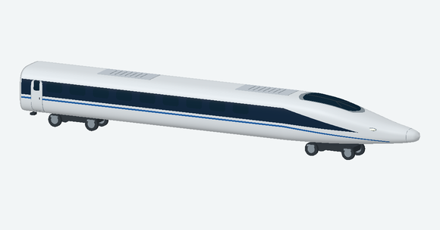
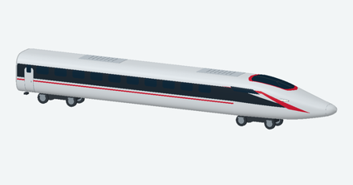
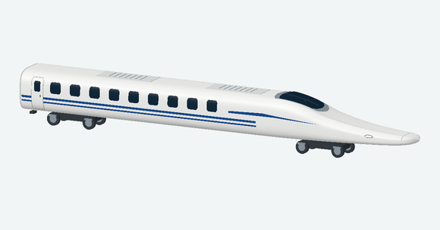
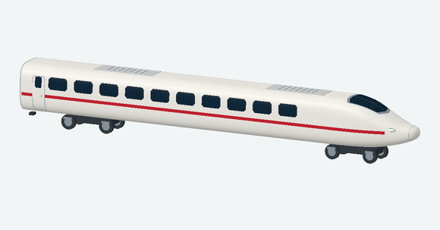
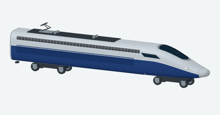
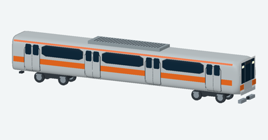

FORM / PROPORTION / DETAIL
从实车轮廓，
到沙盘里的列车。
六种车型，分别重建车头、门窗与涂装。这里展示的图片来自网站中的三维模型，资料链接指向对应的运营方、制造商和模型厂商。





06 · 1:150
E233 系 · 中央线
银色不锈钢车体、上下橙带、每侧四对双扇门与一体式长空调。正面保留黑色玻璃面罩、银色中央区域和橙色两颊。
JR 东日本 · 实车介绍 ↗KATO · 中央线模型照片 ↗如何理解模型的精度
外形根据可获得的实车和官方模型照片原创重建。已查到的主要尺寸按资料缩比，未获得原厂完整图纸的细部、轮位及涂装采用近似表达。自由设置的车厢数用于沙盘运行观赏，不等同于某个商品编号或实际车次的精确编组，也不能用于精密净空和碰撞校核。
参考照片不作为车体贴图；本站展示的是程序生成的三维模型。
选择一列车，驶上自己的线路 →